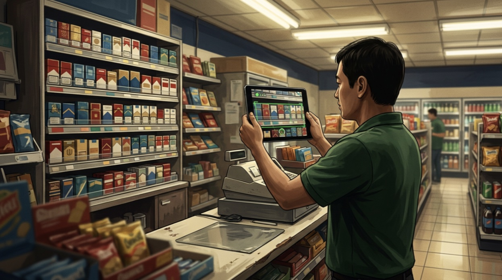

Why Convenience Retail Still Can't See Their Shelves (And How Vision AI at the Edge Fixes It)

A POS system will tell you what should be on the shelf. Receiving minus sales. Simple math. The trouble is, that number drifts. Packs get misplaced, transactions get mis-scanned, shrinkage happens between counts. For tobacco — the highest-value, most regulated category in the store — the expected number is not good enough. You need the actual number, especially at shift change, where the count is how c-store shift handoff software establishes accountability between the outgoing and incoming cashier. And the only way to get the actual number is to count.
My father has operated a convenience store for over 18 years and for all of them I have been there with him. I know what it looks like when a cashier counts 600+ cigarette facings by hand while customers wait. It happens at over 150,000 independent c-stores in the US (per NACS industry data), and the method has not changed in decades.
But this is not about cigarette counting. That is one symptom of a larger gap: independent retailers have no fast, reliable way to verify shelf inventory at shift close. The gap has persisted because the solutions that exist were built for chains with six-figure budgets and dedicated IT teams — not for a store with three employees and a tablet.
Why the Obvious Solutions Fail
Cloud-based computer vision exists. Enterprise camera systems exist. Planogram compliance tools exist for big chains. None of these work for an independent store running on thin margins with unreliable WiFi and no technical staff. Store-grade internet drops unpredictably, per-inference API costs do not pencil at c-store margins, and store owners are not enthusiastic about streaming shelf images to someone else's servers.
But infrastructure is only half the problem. An independent operator running a store with three employees does not have the bandwidth to evaluate, install, or learn a new system.
If the solution does not work the moment it is picked up, it does not get adopted.
Running AI on Device
This is what led me to vision AI at the edge — inference entirely on-device, not as a technical preference, but as the only architecture that survives contact with the actual operating environment.
But "edge AI" sounds cleaner than it is. When your target device is a $200 Android tablet — not an NVIDIA Jetson, not a dedicated vision system — the constraints get real. Model size budgets in tens of megabytes. Inference under a second because a cashier will not wait longer. Memory shared with the OS and every other app on the device.
Making a model run reliably on a consumer tablet — hardware never designed for this workload — is a different engineering problem than just training the model. You do not get to specify your hardware when your customer is a mom-and-pop store. I didn't want to and so I built for what they already own. Unit economics also dictated the edge architecture.
Why a Handheld Changes the Problem
Shelf-scanning AI is not new. Fixed-camera systems already monitor shelves for large grocery and drug chains — mounted cameras capturing images at regular intervals, processed in the cloud. For a chain with IT staff and per-store installation budgets, these work.
An independent c-store is not installing cameras above every shelf. The alternative is a handheld device: a tablet a cashier picks up at shift change and points at the shelf. That changes the computer vision problem fundamentally.
A fixed camera has a controlled angle, consistent lighting, and a known distance to the shelf. A handheld device has none of that. You get fluorescent lights that shift hue throughout the day, reflective packaging at unpredictable angles, hands reaching into frame, and shelves organized differently at every location.
Why Now
Three things have converged that make this possible in a way it was not five years ago.
First, mobile chips in consumer-grade tablets have crossed a real threshold for on-device inference. Compute that required dedicated hardware three years ago now runs on devices costing a fraction of the price.
Second, the economics for our customer. Labor costs are rising and independent retail margins are compressing.
Third, the regulatory pressure. Tobacco compliance requirements are tightening at the state and federal level. Track-and-trace mandates are expanding. Independent stores are being asked to do more verification with the same or fewer staff. A fast, reliable counting tool is moving from nice-to-have toward operational necessity.
This pattern extends beyond convenience stores. Pharmacy shelves, warehouse receiving, field equipment inspection — anywhere you need on-demand visual understanding and cannot assume cloud connectivity or expensive hardware, the same approach applies. Run perception at the edge, on hardware that already exists in the environment.
What Changes When a Store Can See
When a store can verify its own shelves on demand, the immediate effects are tangible. Inventory accuracy improves. Shift accountability becomes instant rather than contested. Compliance verification takes minutes, not a manual audit.
The cashier who spent 30 minutes counting now spends 5 verifying with automated cigarette inventory counting. The AI is not replacing anyone. It is removing the most tedious part of their shift.
But the bigger point: for the first time, a $200 tablet gives an independent store the same shelf awareness that a national chain gets from a six-figure investment. That is a structural shift in who gets access to operational intelligence.
A cashier picks up a tablet, scans the cigarette shelf, and in five minutes knows exactly what is there. Puts the tablet down, closes the shift, moves on. The store knows what it has — not what the system says, not what someone remembers, what is actually on the shelf.
That is not the future of anything. That is a Tuesday.
This is what we are building at Trasio.